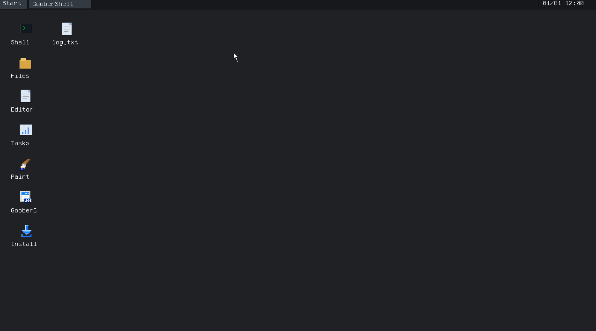
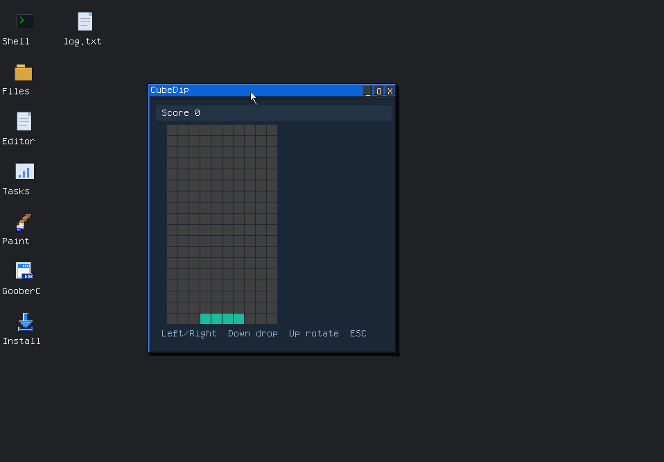
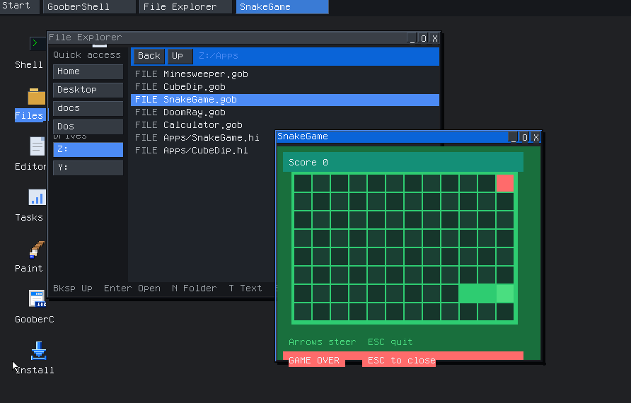

Shell
A command line for the system, including the compiler and the installer.
A small desktop operating system for x86 PCs. Boot the live ISO, install it on a disk, and write the apps that run on it.

The shell, File Explorer, a text editor, and GooberIDE sit next to Paint, Calculator, and Task Manager. Display settings change the theme and the resolution. Disk tools and the installer are on the same desktop.


The ISO starts a live system on BIOS and UEFI machines. From there, the installer writes GooberOS onto a disk as FAT32 or GooberFS. A 64-bit image and a 32-bit image are both available.
A program is a short .gc text file. The compiler writes a .gob, and run opens it in the shell or in a window. GooberDOS can also launch .COM and .EXE programs.

A command line for the system, including the compiler and the installer.
File Explorer, a text editor, and GooberIDE.
Paint, Calculator, and Task Manager.
Themes, resolution, disk tools, and the graphical installer.
The language the desktop apps are written in.
A small DOS guest for COM and EXE programs.
GooberOS is a small desktop operating system for x86 computers. It includes a shell, a desktop, built-in apps, and GooberC, the language those apps are written in.
The Download page saves the latest ISO. Choose the 64-bit image for a current PC, or the 32-bit image for an older one. Write it to a USB drive, or attach it as a virtual disc, and boot it.
The installer asks for the system volume. FAT32 keeps boot files and your files on one partition that other computers can read. GooberFS keeps a small FAT32 boot partition and stores your files on a GooberFS volume. The Documentation page covers the choice and the limits.
GooberC is a short, line-oriented language. You compile a .gc file into a .gob program and run it on the desktop or in the shell. The reference starts on the GooberC page.